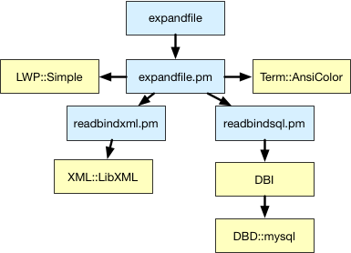

This note describes how expandfile is implemented and how its parts can be used.
Application
The expandfile application is written in the Perl 5 language. It is about 75 lines of Perl code. (Perl is provided with Mac and Unix systems and is available for Windows.)
expandfile uses a Perl module expandfile.pm that does most of the work. It is about 1500 lines. expandfile.pm exports three functions:
- $newtemplate = &expandblocks($template, \%symtb) scans a template for block constructs, defines them in the symbol table, and returns a template without them.
- $newtemplate = &expandMulticsBody($template, \%symtb) replaces low-level reference constructs when reading in a template.
- $ostring = &expandstring($template, \%symtb) expands a template and returns the result.

expandfile.pm uses a Perl module readbindsql.pm that it uses for processing loops over MySQL queries. It uses CPAN modules DBI and DBD::mysql.
expandfile.pm uses a Perl module readbindxml.pm that it uses for processing loops over XML files. It uses CPAN module XML::LibXML
expandfile.pm also uses CPAN modules LWP::Simple and Term::AnsiColor.
These modules are usually installed with Perl.
expandfile is open source, MIT license,  available on GitHub.
available on GitHub.
Using expandfile for File Transformation
I primarily use the expandfile application to generate static HTML pages from HTMX templates, as described in Multics Website Features. At times I also use the expandfile application to expand other kinds of templates, for example to convert data to new formats, or to automate conversion and report generation processes by invoking the *shell builtin to invoke command lines.
Using &expandstring() for Other HTML Production
I have written a few CGI programs, executed by a web server, that invoke expandfile::&expandstring() to generate dynamic HTML pages or data conversions, for example, mail sending and signup forms.
I have also written Perl programs that invoke expandfile::&expandstring() to generate static picture gallery HTML pages.
How expandfile Works
Processing
- Create an associative array %symtb for the definitions of variables.
- Process arguments:
- variable settings: if an argument has the form XX=YYY, perform *set,&XX,=YYY.
-
input files: if the filename is "-", read standard input. Otherwise, read the file and expand it.
- it is often useful to have the first input file consist only of comments and *set,&XX,=YYY commands for configuration variables.
- For each input file,
- call expandblocks() to make a pass over the template finding *block constructs, saving their value in the associative array, and returning the template with the blocks removed.
-
if _xf_expand_multics is nonblank, call expandMulticsBody() to
replace {: ... :}, {+ ... +}, {= ... =}, {- ... -}, {@ ... @}, {[ ... ]}, and {! ... !} constructs by their expansions. - call expandstring() to expand the transformed template, expanding variables and builtins, and return the result.
- write the result of expansion to standard output.
Known Bugs
Because I wrote the program, it works fine for me. There are a few areas where doing something not allowed by expandfile produces a poor or unhelpful error message, but I avoid these mistakes. One error I noticed is a very unhelpful message if you have an unbalanced quote in a COMMENT. (This happens because the quote processing happens before builtin functions (such as comment) are executed.) I make this mistake very rarely, and I don't see an easy fix without a lot of work, and changing the language.
Testing Expandfile
Test Suite
I built a set of smoke tests that I use after changes to expandfile.pm: about 70% of the language features are exercised. The tests are driven by a shell script that runs the tests and compares actual output to expected output. There is also the beginning of a test for the macros in htmxlib.htmi, which tries many of the possible cases for image-generation macros. Much more work would be required to turn this set of tests into a thorough test library. These tests are in a directory testexpandfile.
Test Suite Installation and Configuration
Install expandfile and its prerequisites as described in the installation instructions. Install the test suite. Then type the terminal command
cd bin/testexpandfile; sh setup-config.sh
to set up bin/textexpandfile/config.htmi. If the file is already there, setup-config.sh just shows its date modified. If $HOME/.my.cnf is available, setup-config.sh will use MySQL configuration values from it.
Running the tests
In the testexpandfile directory, type
sh test.sh
to run 49 tests of builtin functions, including *csvloop, *sqlloop, *xmlloop, *ssvloop, and *dirloop. This is not comprehensive... when I find time I can add more test cases. The tests display what the builtin returned, and what it was expected to return.
To test a few external functions called by *shell, type
sh extfunctest.sh
To test some error messages, type
sh testerr.sh
Type
expandfile macrotest.htmt
To test macros in htmxlib.htmi, such as *callv,getimgdiv,.... Some of these macros encapsulate the handling of High DPI images. These tests say !OK! if the macro returns what was expected.
Weaknesses of the Current Perl Implementation
- Support for Perl in modern operating systems is waning: Apple shipped a down-rev version for years and does not provide Perl in Big Sur and beyond. I install Perl using Homebrew on the Mac. Installing Homebrew takes less than an hour.
- Perl is regarded as obsolescent and few programmers know it.
- Currently you have to have CPAN modules DBD and DBI::mysql installed or expandfile refuses to run, even if you never use the SQL features. Installing DBD::mysql requires that you install MySQL and set it up.
- Currently you have to have LibXML installed, even if you never use XML features. Installing the XML support drags in a lot of other CPAN modules.
- Installing all the required Perl modules can take hours and occasionally requires workarounds.
- Changing Perl versions requires reinstalling all the CPAN modules.
- Perl developers are debating community standards and codes of conduct. Some developers are bailing out.
Future Improvements
There are a number of possible improvements to expandfile worth considering. To make these changes we would have to rewrite the application code that uses the features.
- We could eliminate *include and *includeraw in favor of *fread and a variable reference.
- We could eliminate *expand in favor of *expandv and a variable reference
-
We could change the names of builtins that produce output to *get...
(*callv, *dump, *expand, *include, *includeraw, *htmlescape, *if, *onchange, *onnochange)
builtins that may or may not produce output, depending on included statement, are (*callv, *expand, *if, *onchange, *onnochange) so maybe these should be called *eval.... -
We could support sqlite in *sqlloop, by setting hostname to sqlite and databasename.
- I added code to try this out in readbindsql.pm .. added an if statement on the hostname when executing DBI->connect().
- Unfortunately, it does not work: specifying a query will work and execute, but the values bound before iterator blocks are expanded are not the same as for MySQL. The sqlite calls return a blank for the table name of values returned: MySQL binds query results from queries that access more than one table as, e.g. "table1.col1" and "table2.col1" -- sqlite binds results as ".col1" and ".col1". Queries written for MySQL will not work for sqlite, and vice versa. For a JOIN query, expandfile using sqlite cannot distinguish which table a variable came from.
- This means that an sqlite database is not a drop-in replacement for a MySQL database.
- I corresponded with Kenichi Ishigaki, the author of DBD::sqlite. He says that the SQLite C API does not provide an interface that returns the table name for each query value returned: it only returns the column name. I will have to correspond with the sqlite C-Perl developers and propose that the API be enhanced, and if they do that, suggest to Ishigaki that then DBD::sqlite return the table names like DBD::mysql.
- What about mariadb, or other databases? I will have to test and see if mariadb is a drop in replacement for MySQL, including returning the table name. I did one test using mariadb on Linux systems in place of MySQL in 2022 or 2023, and simple tests worked OK. (The company "mariadb" was sold in 2024, but the MariaDB foundation is "separate and thriving.")
- Languages other than Perl handle multiple databases, e.g. Java has JDBC. Can we generalize plugging a database into expandfile? Does expandfile need a configuration item that says what kind of database it is? Could expandfile connect to multiple different databases at the same time? What if a user wants 2 different kinds in one expandfile execution? -- perhaps the database config should be a structure type/host/dbname/user/password/port/idunno.. This needs to be redesigned to be object oriented, without making it harder to use.
- The way configuration is specified for *sqlloop etc using the global symbol table is a "tramp linkage." It is ugly, inconvenient, and error prone. We could pass 5 more args to sqlloop everywhere and eliminate globals, or have "username|password|server|port|database|options" in a variable, with the separator "|" reserved. This is ugly.. what if a sixth parameter is needed by some future database? Maybe we need "_xf_sql_username=u,_xf_sql_password=pp,_xf_sql_server=sss,_xf_sql_port=123,_xf_sql_database=dbname,_xf_sql_options=xxx" and so on: then we could parse it as a CSV. The database configuration variable names should begin with a prefix like _xf_ to avoid conflict with user variables.
- Provide a *jsonloop construct for JSON data instead of translating it to XML. Is there an analogue to an XPath for JSON?
-
Why not generalize loop constructs so that they can be added without changing base expandfile?
For example, replace *sqlloop, *dirloop, *ssvloop, *csvloop, *xmlloop etc with
%[*forloop,&outvar,setup,arg1,nextfn,arg2,testfn,arg3]%
which runs "setup(arg1)" and then "nextfn(arg2)" over and over till "testfn(arg3)" becomes empty, answer in "outvar" .. e.g %[*forloop,&outvar,_sqlconfig,="SELECT * FROM glop",_sqlbindexpand,iterator_block,_sqlisempty,_result]%
"nextfn" funcs to unify sqlloop and ssvloop and other possible loops (e.g. pushdown list/array)??
.. function %[*sqlbind,&cursor,configuration,query]%
.. function %[*sqlfetch,&cursor]% -- sets cursor to null when eof - Improve linkage so that, e.g., if a user never uses *xmlloop they don't need to have LibXML installed in CPAN. I tried one way to do this, but the simple solution worked in some versions of Perl but not others. Perlmonks suggests doing $mod = 'My::Module1'; eval "require $mod";... this will fail ugly if DBD::MySQL is not installed. A fancier version depended on having the non-standard Perl Module "Class" being available -- so to avoid installing one module you have to install another.
- Make the "Multics" expansion features e.g. {[ ... ]} an optional module. Could it be loadable/replaceable/extensible? Each expansion feature should be a separate loadable module.
- Define an extension protocol so that builtin functions can be separated from expandfile.pm, and loaded optionally. *shell allows defining functions that extend the language, but the called function has limited access to the global dictionary, and calls are slow because they launch a large shell process every time, which then launches other processes. How about something like %[*loadfunction,="twizzle",="twizzle.pm",="Result Inoutvalue Valuessv"]% where arg3 is a SSV list of argument types.
- Right now expandfile has no typed variables. Very Perl5-ish: everything is a string. Just sayin.
- Could we bind a C-coded function to a builtin name? Perl6 lets you do this. Think I would want a lot of safeguards, hard to debug.
- Generalize and improve error reporting. I wasted hours debugging an unbalanced double quote in a comment. The basic scanner could make some notes that get printed on an unbalanced string error.
- Add an internal switch that controls whether a missing *include file is a fatal error or just a comment. Similarly for missing directory in *dirloop. etc.
- Sanitize args to subst, remove backticks, what else?
- Change *dump to call warn instead of printing to stdout?
- Add variables that control other error behavior, etc
- Use single ampersand to indicate OUT param, double ampersand to indicate INOUT (would have to change many source files: *concat, *increment, *decrement, *popssv, *subst, *product)
- Maybe *product should not be inout
- Trace goes to STDERR, is this OK? Should I make it configurable?
- Add a way to trace any setting of a listed varname .. keep a table of regexp varnames .. cd have an SSV of varnames
- Add a way to trace any execution of a listed func .. keep a table of regexp varnames
- Find places commented DEBUG and make them switchable trace functions
- Change name of HTMXDEBUG2, and be thorough about tracing interesting things; also make other *debug verbs
- Documentation.. build a requirements doc independent of implementation and a high level implementation tree
- Clean up configure/install and do it in a standard way, including a check in configure that prerequisites are present. install should just install the code, configure should set up Makefile and config for a directory, and be idempotent.
- Vastly improve tests, generate them mechanically, invent a fuzzer
- We could package Perl-implemented expandfile using SNAP, a a packaging technology that works for Unix/Linux and Windows. Users could then install SNAP on their Unix/Linux machines once, and install and use expandfile, with much less work. A key question is whether this has a big performance impact. (SNAP does not seem to work on Mac. One can install snapcraft and multipass using Homebrew and generate Snap files. Since there is no snapd for Mac, one cannot run Snap files under MacOS.)
Implementation Language
Efficiency has not been a crucial issue with expandfile for my uses. If I were dealing with templates with many thousands of lines, or frequent expansion of online templates, it might be important. Perl 5 is an interpreted language. Using *shell launches 2 processes for every invocation, so it is even slower. It would be possible to rewrite expandfile in some other language than Perl: a non-interpreted language would save the parsing and interpretation of every Perl statement, and perhaps support some optimizations. The advantage of Perl for me is that I find it easy to make incremental improvements to the program's function and to debug problems.
On the other hand, Perl has many internal optimizations, tested by time. Regexp caching and execution, for example.
Currently, installing expandfile requires command line skills on the Mac and Linux. You need to install the right versions of Perl, various libraries and helper programs, MySQL, and CPAN -- all in the right order. This process takes hours. Some people have decided not to use expandfile because the install process is so complicated, so I am looking for ways to simplify the process.
Language Features Required
- Variables that hold strings of large size and manage the storage: i.e. no malloc()/free(), no predeclared maximum size, efficient
- String operations: substr, index, concatenate, etc
- Regular expression match, with subregular match, and substitute on strings
- Convert string to number and number to string
- Extensible 'map' or 'hash' data structure with any size strings for keys and values
- Read and write local files
- Read STDIN, write STDOUT
- Get command line arguments
- Get date and time values as string: year, month, ISO date, etc
- Read shell environment variables
- Pass command line to the shell and capture the result in a string
- Fetch contents of a remote URL
- Easy installation: e.g. on Mac, use MacPorts or brew; on Linux, use package manager
- Function libraries that extend the base language:
- MySQL: open database, execute queries, process each row returned, bind return values to string values, provide column names (including table name for JOINs)
- * desired: do same as MySQL for sqlite3, including column names with table names
- XML: read file, execute XPATH queries, process each row returned, bind item names and values
To my way of thinking, this rules out C. I would have to basically reinvent Perl. We have Perl already.
Python
In 2016, I tried porting expandfile to Python 2.7, as an experiment; the code had more lines and execution was a little slower. Much of the size increase came from the need to check if a Python variable was defined; in Perl, an undefined value in an associative array is equal to an empty string, and expandfile code assumes this. Converting to Python did find a few latent bugs. I did not try to port XML or MySQL features. I later rewrote expandfile to use internal getter and setter functions, partly to make future ports easier.
Python has some of the same issues as Perl, including managing language level, OS integration, deployment on user machines, and library integration. I would have to find equivalents for all the functions I now get from CPAN. In the early 00s, Macs came with both Perl and Python, but Apple is removing this support.
In a superficial examination of the Python MySQL connector interface, I did not see the feature of returning column names including table name for a JOIN. This would be a functional regression from the Perl version. I'd have to rewrite my code that depends on this feature.
I have not considered Python 3. It is up to 3.12 already. Expandfile has changed a lot since 2016, and porting to Python 3 would be a whole new project.
Go
In Oct 2021, I began porting expandfile to the Go> language, version 1.7.2, on a Mac. As of Jan 2022, it worked, except for the XML library. All tests completed without crashing: most tests pass, except for minor cosmetic problems. The Golang implementation is slower than the Perl version (looking into this). Go has now advanced to version 1.24.2 and I will have to redo the port. My observations are in a separate page.
Ruby
In Jul 2022, I tried porting expandfile to the Ruby language, version 3.1.2, on a Mac. Regular expressions in Ruby are slightly different from those in Perl: it is not clear whether existing expandfile programs that depend on regular expressions can be compatible.
All tests complete without crashing as of 27 Aug 2022. Basic expansion and builtin tests pass. CSV parsing works. SQL access works, but the Ruby "mysql2" module does not provide table names in reflection data, so table names are not used in variable bindings of query results. A few tests of Multics expansions are failing. Some *callv macros return an extraneous NL character at the end of their result. XML access is not finished yet. I am looking at using rexml and its XPATH support. My tests compile and run but get wrong answers.
Rust
I tried porting expandfile to the Rust language. I hope the result will be faster than Go and Perl. I have started preliminary explorations. The language keeps changing under me.
JavaScript
How about re-implementing expandfile in JavaScript? It looks possible but I have not started on it.
- JavaScript is available for modern operating systems. Node.js can be installed easily and allows one to invoke a JavaScript program from the command line.
- Should be possible to create an expandfile-like program that does not require the installation of features you don't use, e.g. MySQL, XML.
- JavaScript can support
- Values that are strings
- File system access
- XML and CSV access
- MySQL access
- URL fetching
- Regular expression matching and substitution
- Map datatype
- Invocation of command programs and capture of their output
- In addition, a JavaScript version of expandfile could add new features:
- Allow loading of builtins at runtime .. invocation patterns for iterators, file accessors, etc
- Static typing for variables.. numbers, arrays, stacks
Perl 6 (Raku)
Perl 6 is still in its early development: it was first available in 2017. I considered re-implementing expandfile in Perl 6, tried a few experiments, gave up.
I looked at Raku again in 2025: it has improved a lot. The documentation is much more useful. There is a "Perl to Raku" web page. There are a lot of nice features in the language.
One major task for me would be translating all the Perl regexps in expandfile into Raku regexps: Raku regexps are much easier to use and more powerful, but translating Perl REs to Raku would be tedious work.
Costs: learn a new language, major recoding of everything. Because the language is still developing, it might change under me: I adapted to Perl changes, but found keeping up with Go and Rust daunting. If I went with Raku, I think it would be harder to involve other programmers.
Unchanged from Perl: I would still have to install external modules for all the functions that expandfile uses. It appears that moving to each new release of the language would involve me in the same tedious rebuild and integration that I see with Perl.
Seemed like the best way to get Perl6 on a Mac is to visit https://rakudo.org/downloads/star and download rakudo-star-whatever-macos-x86_64.dmg. I did.
Early experiments: I made Perl v6 versions of expandfile and expandfile.pm and hammered on them till they compiled in Raku. (I commented out parts that depended on CPAN, such as *sqlloop.) Documentation and compiler diagnostic messages after minor errors were often very hard to understand. (For example, unbalanced constructs produce a cryptic error message complaining about the last line of the program. I have not seen such unhelpful messages since using AED-0 in 1965.) I gave up.
If I want to continue with Raku, I'll have to start over: the language ha changed a lot since my last try. Now I am on Apple Silicon. There are supposedly ways to use CPAN modules with Raku. Installing these would be at similar to Perl. It looks like a daunting amount of work.. is there any upside?
LISP
Just a thought. Bernie went through similar implementation choice considerations when designing Emacs in 1978, and chose LISP. It's fast, widely available, and has a compiler with integration between interpretation and compilation. It can call externally compiled routines in other languages. Lotta different kinds of LISP: clisp, clojure, gcl, ecl, scheme.. which would I use? LISP is available for Mac, Windows, Linux, but not standard on any.
C++
How bout rewriting the Perl in C++ using std::string and <cctype> and boost_regex? Would have to learn a lot of fine points: ownership, views, const. My experience with C++ at Taligent was that it's a powerful and efficient language with many pitfalls. Library support for SQL and XML would probably require me to learn a lot about Makefile generation and packaging, and then again I would have to solve the problem of installing all the libraries.
Other
Need a language that is freely available and easy to install.
Other Improvement Ideas
# the filenames in expandfile are relative to the wdir, not to the calling file path. # maybe this should be changed. certainly it should be documented. # # 01/11/05 6 AM ideas # 2) really I want %[*if,(predicate),cmd]% and access to a full language.. LISP # 3) notion of arrays -- SSVs are a weak substitute # 4) variables as push down lists or stacks # # there are limits to sizes. document. # # here is another idea.. %[*pipe,&outputvar,inputvar,command]% # .. say I build up a variable that has a lot of mysql input, and feed it to mysql shell command. # .. doing this in Perl with both input and output is tricky # .. right now I can do this by generating the var, writing into a temp file, and running the cmd .. litters wdir, has restart and nesting issues # .. Perl6 Proc.async could do this # # my address book reader does complicated parsing and could be a third loop if I can # .. figure out a callback scheme. That is really the wanted breakthrough. I guess I could # .. do something like a Perl "exec" %[*exec,perl]% -- is this too powerful?? #